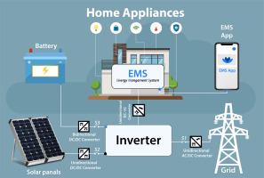

I have designed an innovative app for a Solar Management System that aims to streamline the management and monitoring of solar energy systems for both residential and commercial users. The app is designed to provide real-time data, improve energy efficiency, and optimize the performance of solar panels. With user-friendly features, it empowers users to take full control of their solar energy consumption and monitor the performance of their installations.
The Solar Management System app offers several key functionalities. First, it provides real-time monitoring of energy production, consumption, and system performance. Users can track how much energy is being generated by their solar panels, how much energy is being consumed, and how much surplus energy is being sent back to the grid. This transparency helps users understand their energy usage patterns and make informed decisions to improve energy efficiency.
The app also provides detailed analytics and reports on solar system performance. Users can access historical data, trends, and performance graphs, enabling them to identify any inefficiencies or potential issues with the system. This feature is particularly useful for maintenance, as it helps pinpoint areas that require attention and ensures the system is running optimally.
I have designed a Library Management System website to help streamline the management and operation of libraries. The website is aimed at providing both staff and library users with an efficient, easy-to-use platform for managing books, memberships, and borrowing activities. The system includes multiple features designed to improve the overall user experience and optimize the library's operations.
For library staff, the website offers a robust administrative dashboard where they can easily manage the entire library’s catalog. This includes adding, updating, and removing books, as well as tracking book availability and condition. Staff can also manage user registrations, issue new membership cards, and monitor overdue items. An integrated search function allows users to search for books by title, author, or genre, making it easy to find what they need.